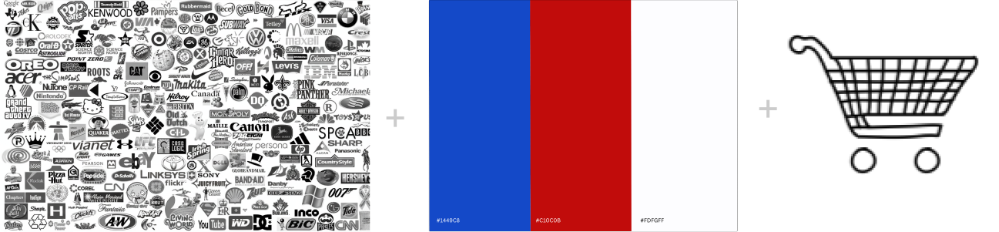

Editorial Illustration
A response to Beth Kowitt’s Bloomberg Opinion piece on consumers turning away from iconic American brands.
Why
The article told me brands were losing shoppers. I wanted you to feel it.
What I did
I put you in the shopper’s seat. Reach for an American product and it pulls away.
What it taught me
The emptier the shelves get, the more you notice who was doing the buying.
With Talia Cotton · Fall 2025
[Figma, Adobe Illustrator, Photoshop, After Effects]

Open live experience